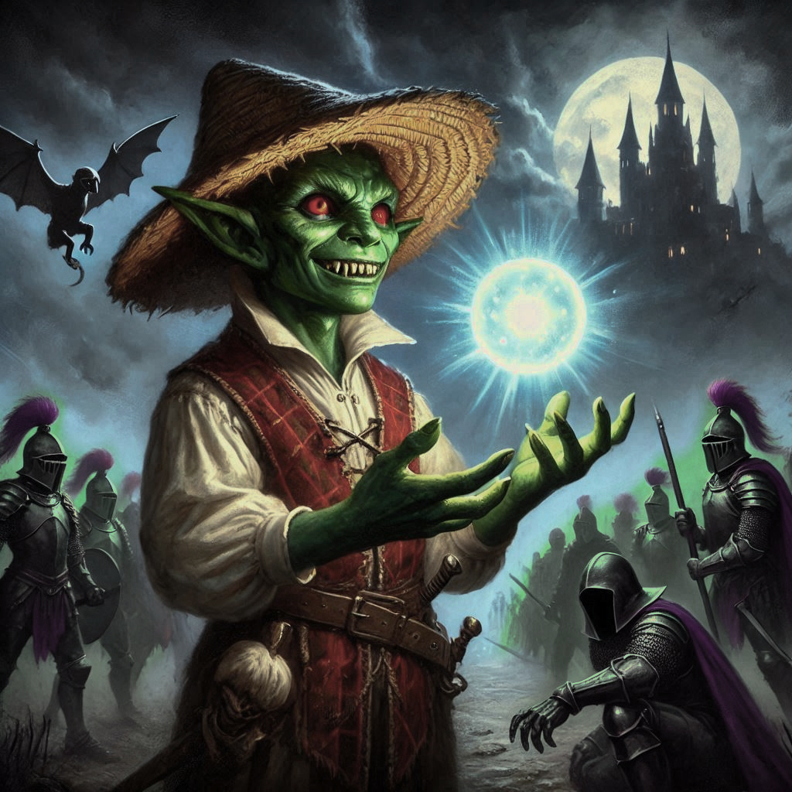
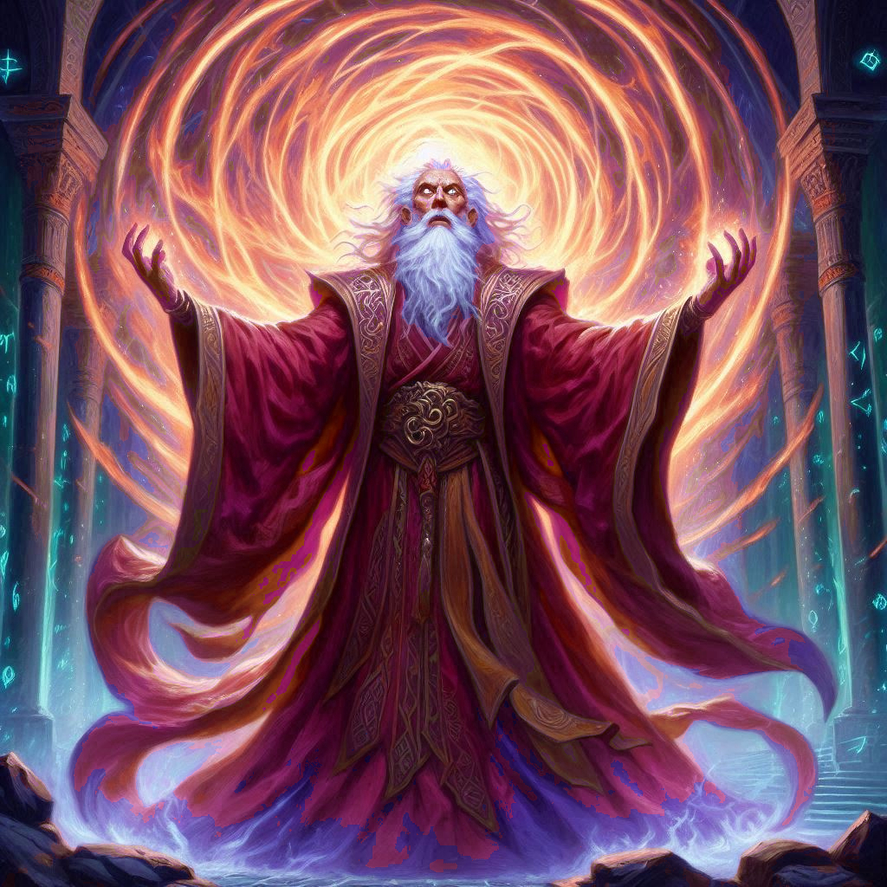

The Goblin's Bargain
You stand in the dim light of the temple, the weight of the rune stone heavy in your palm. Shamurel’s yellow eyes gleam with greed, his hand outstretched, waiting for the precious artifact you’ve uncovered. Elias shifts uncomfortably beside you, his unease palpable as he watches the goblin with suspicion.
"Are you sure about this?" Elias asks, his voice low, barely more than a whisper.
You glance down at the rune stone once more, its etched symbols glowing faintly with an eerie, otherworldly light. It’s your only lead to finding Onyx. The goblin has promised to take you to Umbra'Thal, the dark heart of the Realm of Shadows, where Onyx is being held. But you can feel the trickery in Shamurel’s grin, the flicker of deceit behind his eager eyes. Yet, what choice do you have?
“We don’t have another option,” you say, resolve settling in your gut. You place the rune stone in Shamurel’s outstretched hand. His gnarled fingers close around it immediately, and he lets out a satisfied hiss.
“Good choice, ranger,” he says with a chuckle, tucking the stone away in a pouch at his waist. “Follow me.”
Shamurel scurries ahead, leading you and Elias through a narrow tunnel that seems to wind deeper and deeper into the earth. The air grows thick with dampness and the smell of decay, each step you take muffled by the oppressive silence of the Realm of Shadows. Elias remains close, his hand brushing against the hilt of his blade, every muscle in his body tensed for the inevitable betrayal.
You pass through a series of tight passages until the tunnel opens into a large cavern, the ground slick and uneven. Ahead, the faint glow of torchlight illuminates the jagged black spires of Umbra'Thal, the fortress city of the dark elves. The sight sends a shiver down your spine. High, spiked towers rise into the sky, their stone carved with ancient, sinister runes. The walls themselves seem to shimmer with dark magic.
Shamurel stops suddenly, holding up a hand. “Stay here. Dark elves are patrolling the walls. I’ll fetch you when it’s safe.”
Before you can question him, the goblin slips into the shadows, disappearing into the black mist swirling around the fortress. You and Elias exchange a glance, the tension between you two growing.
“We can’t trust him,” Elias mutters. “He’s probably going to turn us in.”
You nod, but before either of you can react further, a sudden clamor erupts from the fortress gates. A group of dark elf warriors marches out, their armor gleaming obsidian, their pale faces shrouded in hoods. At their head is a tall, slender figure, eyes glowing with the same sinister magic that radiates from the walls of Umbra’Thal.
“Shamurel,” Elias breathes in realization. “He’s betrayed us.”
But as the dark elves advance, Shamurel appears again, darting from the shadows and cutting across the path of the warriors. For a moment, you think he’s leading them directly to you, but the goblin does something unexpected. He skitters up to the lead elf, hands raised in mock submission. Just as the elf reaches out to grab him, Shamurel pulls a small stone from his pouch—the rune stone.
A flash of light blinds the soldiers, and they all reel backwards. Some of them fall to the ground, the light causing them obvious physical pain. And in the confusion, Shamurel darts back to you. “Quick! Follow me!” he whispers, racing toward a concealed side passage in the fortress wall.
You don’t hesitate, grabbing Elias’s arm and rushing after the goblin. The sounds of the dark elf soldiers recovering from the blinding light echo behind you as you slip into the shadows of the secret tunnel, concealed from their view. Shamurel leads you through narrow corridors, his feet slapping against the damp stone. The passage winds upward, and soon you find yourself inside the heart of Umbra’Thal.
Shamurel guides you through hidden paths and secret doors until you reach a dark, cold chamber deep beneath the fortress. There, in a cell barely big enough for a man to stand, you see Onyx. The dwarf elder is chained to the wall, his face gaunt, but his eyes are still sharp, still aware.
"Onyx!" you exclaim, rushing to the bars of his cell.
Onyx stirs, blinking up at you. "Kira..." he rasps, his voice rough from days without water. "I knew you'd come. Is Jorsh with you?"
“Jorsh? No!” you exclaim, certain that Onyx is confused after many beatings and much abuse at the hands of the dark elves.
Elias steps forward, examining the lock on the door. "We need to get him out of here. Fast."
But before you can act, a new sound fills the chamber—footsteps. Heavy, deliberate. The temperature in the room drops as the doors behind you swing open. A tall figure steps through the threshold, his blood red cloak billowing around him. Varis, the Minister of Trade—and the dark elf prince.
His lips curl into a mocking smile. “I see you’ve found your way into my domain, ranger. Foolish of you to think you could simply take him and leave.”
The air grows thick with magic as Varis raises a hand, dark energy swirling around him. Shadows creep along the walls, inching toward you and Elias. Shamurel, cowering behind a pillar, whispers, “This is where you make your choice.”